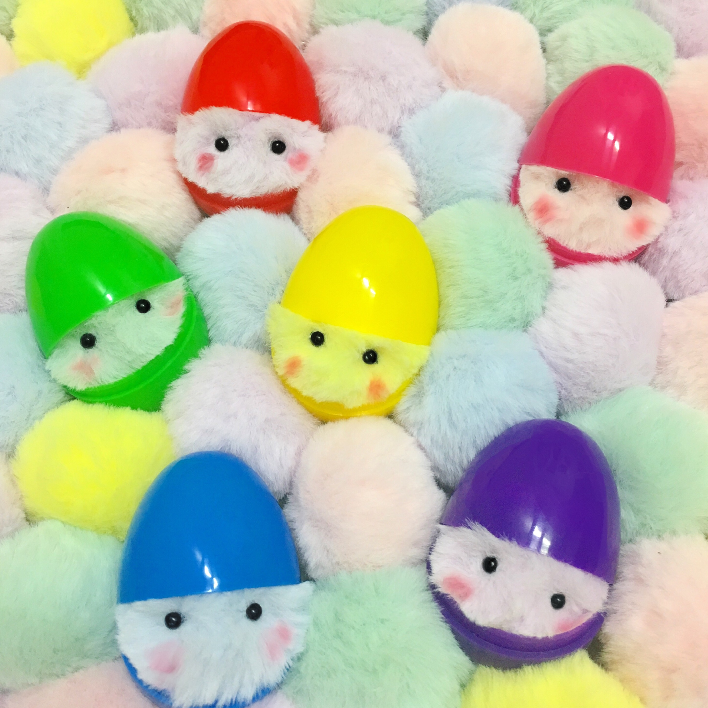

#마리몽 #Marimong
꿈속을 몽실몽실 떠돌아다니는 요정.
악몽의 악한 기운을 먹으며 행복한 꿈을 만든다.
생김새 : 다양한 색상의 보들보들한 털로 덮힌 동그란 구모양,
수줍음이 많아 발그레한 볼,
우주를 닮은 작고 동그란 눈을 가지고 있다.
성격 : 불에 약하지만 따뜻한 온기를 좋아해
손으로 쓰다듬어주는 것을 좋아하며,
얘기 듣는 것도 좋아해
말 못할 고민을 털어내보는 것도 좋다.
수명 : 달걀모양의 작은 알에서 태어나,
죽을 때가 되면 조용히 자취를 감춘다.
